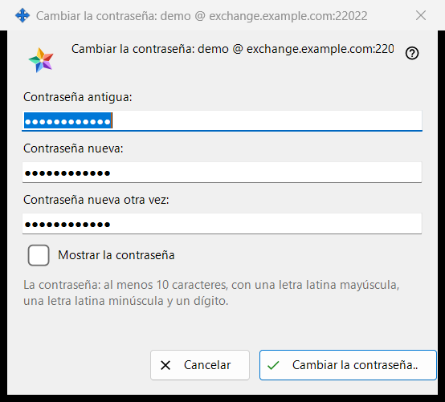
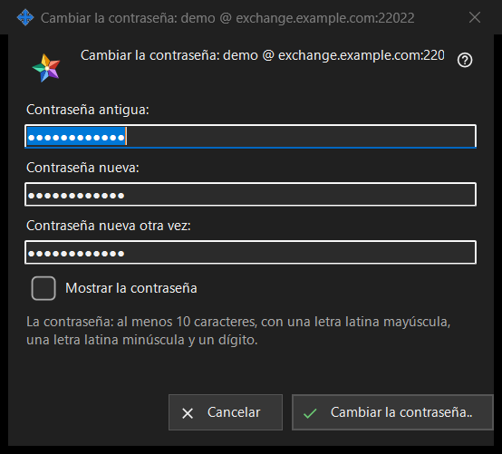

Cambiar la contraseña
Para qué sirve
Cambia la contraseña de la cuenta de intercambio en la que ha iniciado sesión este PC. Se abre desde «Cambiar la contraseña..» en el grupo «Cuenta de intercambio» de la configuración del Share Manager, un botón que solo se muestra mientras la cuenta está conectada. El título de la ventana nombra la cuenta como inicio de sesión @ servidor. La propia ventana no envía nada: comprueba lo que has escrito y lo devuelve, lo envía la conexión de este PC, y la última palabra es del servidor.


En este orden
- En la configuración del Share Manager busca el grupo «Cuenta de intercambio» y pulsa «Cambiar la contraseña..».
- Escribe la contraseña antigua en «Contraseña antigua:».
- Escribe la contraseña nueva en «Contraseña nueva:» y repítela en «Contraseña nueva otra vez:».
- Marca «Mostrar la contraseña» para comprobar los tres campos.
- Pulsa «Cambiar la contraseña..»; si aparece una línea de aviso, corrige el campo y pulsa de nuevo.
- Lee la respuesta que se muestra en el grupo.
Los elementos
Los tres campos
La contraseña antigua, la nueva y la nueva repetida. Los tres están enmascarados; la única marca «Mostrar la contraseña» los revela a la vez y no se recuerda. Los campos se vacían al cerrar la ventana.
La regla de la contraseña
La línea debajo de los campos dice: «La contraseña: al menos 10 caracteres, con una letra latina mayúscula, una letra latina minúscula y un dígito.» La ventana la comprueba al instante, de modo que recibes una respuesta antes de que se envíe nada.
La línea de aviso
El botón comprueba en este orden: «Indica la contraseña antigua.», «Las dos contraseñas no coinciden.», y después la regla: «La contraseña es más corta de 10 caracteres.», «La contraseña no tiene una letra latina mayúscula.», «La contraseña no tiene una letra latina minúscula.», «La contraseña no tiene ningún dígito.». El primer problema detiene la comprobación, la ventana sigue abierta y no se envía nada.
Qué ocurre después de pulsar
Una entrada correcta cierra la ventana y el grupo muestra la respuesta. Éxito: «La contraseña ha cambiado. Este equipo sigue funcionando, y los demás dispositivos de la cuenta deben iniciar sesión de nuevo.» Otras respuestas: «La contraseña antigua no era correcta.», «Demasiados intentos. Espera un minuto y vuelve a intentarlo.», «El servidor rechazó el cambio de contraseña.» y «No hay conexión con el servidor. Conéctate y vuelve a intentarlo.». Cuando el servidor rechaza una contraseña débil, se muestra su propia frase.
Cancelar y teclas
«Cancelar» o Esc cierra la ventana y no cambia nada; Enter pulsa «Cambiar la contraseña..».
Ajustes del gestor · Ajustes de uso compartido SFTP · Ajustes del servidor de intercambio